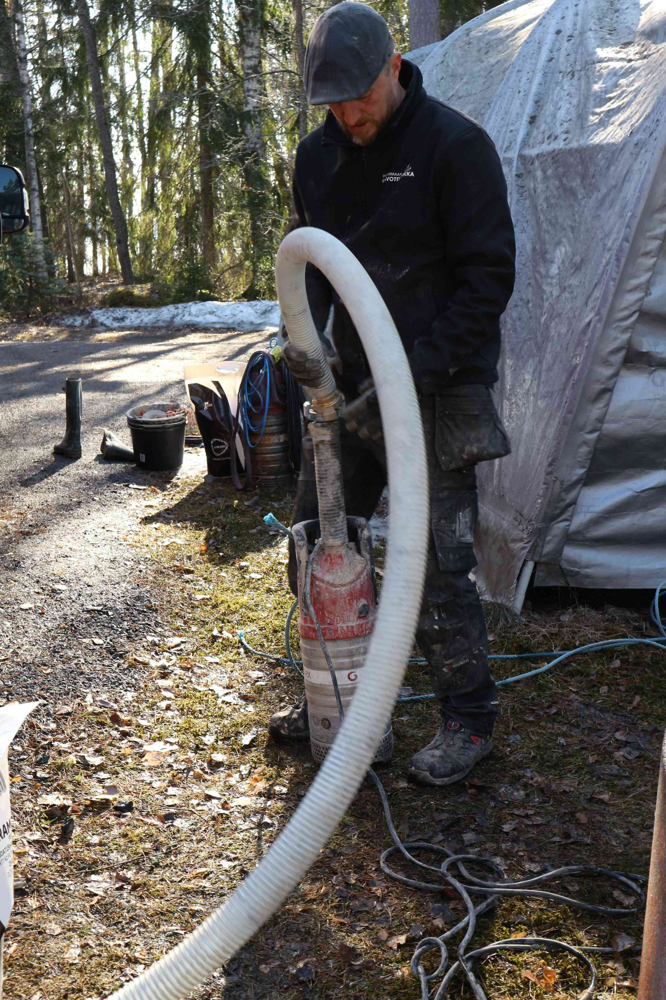
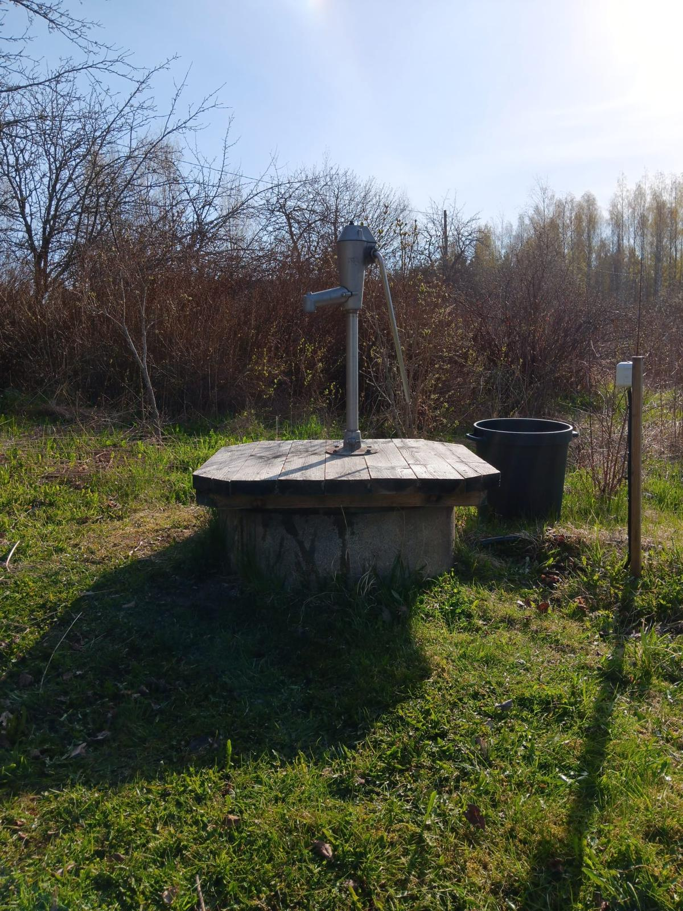
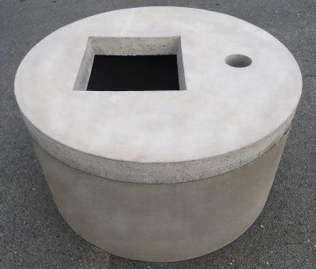
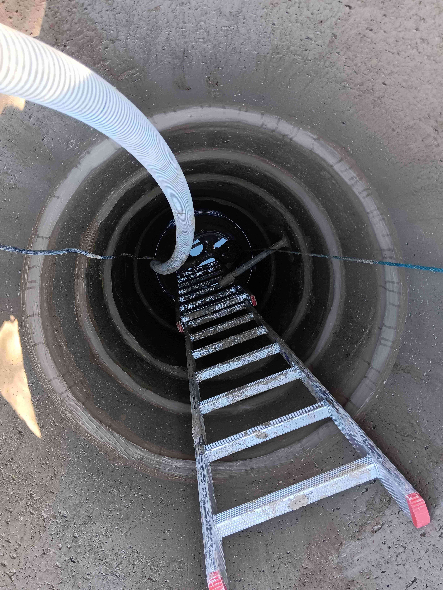

Rengaskaivo huolto
Rengaskaivo huolto alkaen 1100 euroa eikä hintaan tule ylimääräisiä piilokuluja esimerkiksi saumoista.
Rengaskaivon huolto suositellaan tehtäväksi 3-5 vuoden välein.
Pirkanmaan kaivotekniikka toteuttaa rengaskaivohuollot maanlaajuisesti ammattitaidolla.
Meillä on vuosien kokemus kaivohuolloista ja asennuksista.
Rengaskaivohuollon toimenpiteet:
- Kaivo tyhjennetään vedestä.
- Kaivo pestään korkeapainepesulla.
- Pohjalta poistetaan irtoliete.
- Pohjaventtiilin, liittimien sekä pumpun kunto tarkistetaan.
- Kaivon renkaisiin saumataan paksut saumat elintarvikehyväksytyllä saumausaineella. Saumoille annamme 2 vuoden takuun.
- Rengaskaivon pohjalle laitetaan suodatushiekka sekä kalkkikivirouhe.
- Kansi tiivistetään tiivistenauhalla
- Desinfiointi suoritetaan vetyperoksidiliuoksella rengaskaivohuollon jälkeen.
Desinfioinnin jälkeen vesi ei sovellu 24 tuntiin talousvesi käyttöön.
Vetyperoksidikäsittelyn jälkeen vettä ei tarvitse juoksuttaa, sillä vetyperoksidia hajoaa vedeksi ja hapeksi 24 tunnin aikana.
Rengaskaivohuollon jälkeen suosittelemme vesinäytteen ottamista aikaisintaan 2 viikon kuluttua huollosta, jolloin saadaan mahdollisimman realistinen tulos veden laadusta sekä nähdään lisäksi tarvitaanko suodatinlaitteistoa veden puhdistukseen.
Asennamme myös tarvittaessa veden suodattimet kaivohuollon jälkeen. Käytämme jaloveden suodattimia.
Huollon yhteydessä pystymme tekemään kaikki putkityöt alusta loppuun tarvikkeineen.



